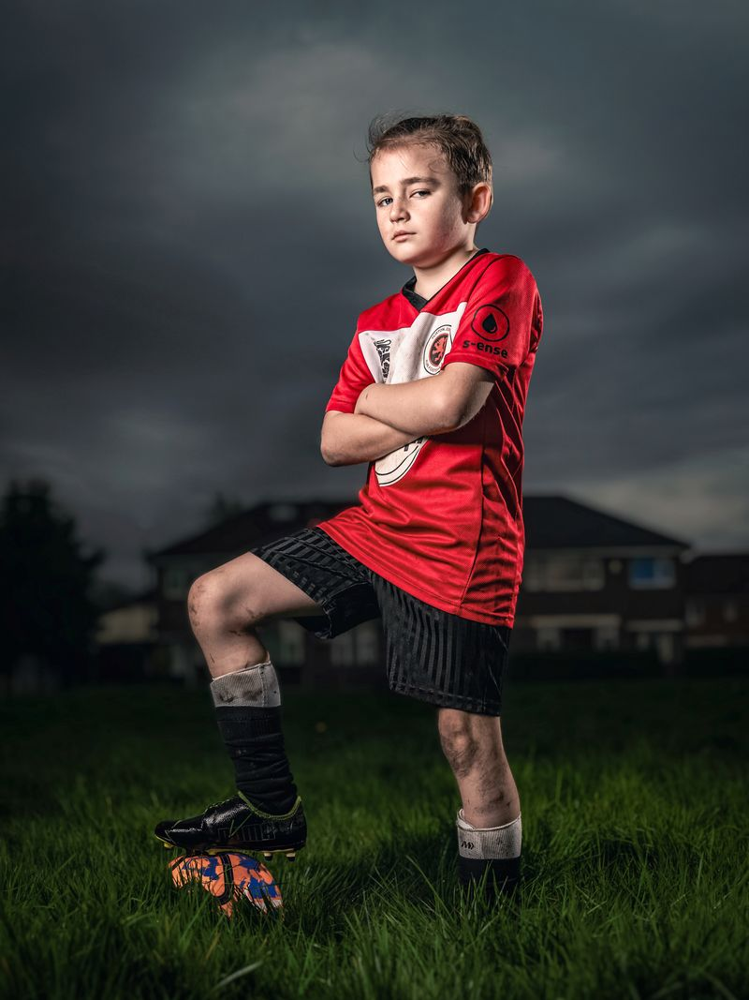

Card estático
Agrupa informação.
Sprint 4 · Styleguide vivo
Tudo nesta página usa o mesmo CSS do app (assets/css/tailwind.css). As cores, fontes e tamanhos são lidos ao vivo dos tokens do Tailwind v4 (@theme): se um token mudar, esta página muda junto.
Navy e dourado vêm do legado Pelé; o papel dá o tom editorial. Cada amostra mostra o valor que o navegador está aplicando agora e o utilitário Tailwind gerado.
Archivo Expanded nas manchetes, Saira Condensed nos números da carta, Inter no corpo.
font-displayTalento de todo o Brasilfont-stat92 · ÍNDICE · ATAfont-uiBotões, rótulos e navegaçãofont-bodyTexto corrido, descrições e mensagens. Altura de linha 1.6 para leitura confortável.A escala de espaço da Sprint 1 continua como variáveis (--space-1 a --space-9); raios são tokens do Tailwind.
Três faixas testadas em todas as telas, sem scroll lateral. A navegação vira barra inferior no celular.
Sua tela agora:
Primeira linha: variações. Segunda: os estados do botão dourado. Hover, foco e pressionado aparecem fixos para comparação, e o botão de cima reage de verdade ao mouse e ao Tab.
Rótulo sempre visível, dica abaixo e erro ligado ao campo por aria-describedby.
Selects nos filtros e formulários; chips para características (o coração do produto) e filtros de posição.
Selos marcam status; avisos explicam regras (sempre com texto, nunca só cor).
O card clicável reage a hover e foco. A Carta do Atleta é o componente-assinatura.
Agrupa informação.
Passe o mouse ou use Tab.

REGISTRO 047 · PELÉ ACADEMIAOs quatro estados que todo envio do app atravessa. Os componentes abaixo são os mesmos de Inscrição na peneira. Use os botões para ver o toast ao vivo.
Você ainda não se inscreveu em nenhuma peneira.
Campos travados e aria-busy="true" no formulário.
Este bloco é montado só com classes utilitárias do Tailwind, todas geradas a partir do @theme do projeto.
Peneira Nacional Sub-13
Inscrições até 30/11
<div class="bg-navy text-white rounded-lg p-6 md:flex-row">
<p class="font-stat text-ouro-lt">...</p>
<a class="bg-ouro text-ink hover:bg-ouro-lt rounded-md">Inscrever-se</a>
</div>
/* assets/css/tailwind-input.css */
@theme {
--color-navy: #0B2A6B;
--color-ouro: #E0A92E;
--font-display: "Archivo Expanded", ...;
}